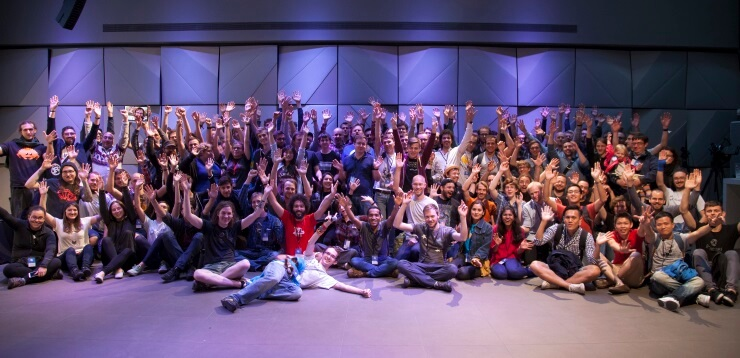
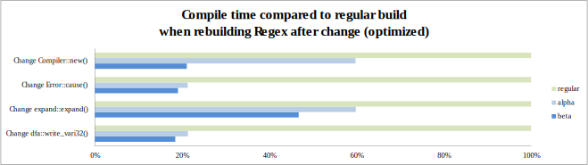

Two years of Rust
Rust is a language for confident, productive systems programming. It aims to make systems programming accessible to a wider audience, and to raise the ambitions of dyed-in-the-wool systems hackers.
It’s been two years since Rust 1.0 was released. Happy second birthday, Rust!

Rustaceans at RustFest Berlin, September 2016. Picture by Fiona Castiñeira
Over these two years, we have demonstrated stability without stagnation, maintaining backwards compatibility with version 1.0 while also making many improvements. Conveniently, Rust’s birthday is a bit under halfway through 2017, which makes this a great time to reflect not only on the progress in the last year but also on the progress of our 2017 Roadmap goals.
After reading this post, if you’d like to give us your feedback on how we’re doing and where Rust should focus next, please fill out our 2017 State of Rust survey.
But first, let’s do the numbers!
Rust in numbers
A lot has happened since Rust’s first birthday:
- 10,800 commits by 663 contributors (438 of them new this year) added to the core repository;
- 56 RFCs merged;
- 9 minor releases and 2 patch releases shipped;
- 4,405 new crates published;
- 284 standard library stabilizations;
- 10 languages rust-lang.org has been translated into;
- 48 new companies running Rust in production;
- 4 new teams (Docs, Style, Infrastructure, and the Unsafe Guidelines strike team);
- 24 occasions of adding people to teams, 6 retirings of people from teams;
- 3 babies born to people on the Rust teams;
- 2 years of stability delivered.
On an average week this year, the Rust community merged 1 RFC and published 83 new crates. Rust topped the “most loved language” for the second year in a row in the StackOverflow survey. Also new this year is thanks.rust-lang.org, a site where you can browse contributors by release.
Rust in production
In addition to the 48 new Rust friends, we now have a Rust jobs website! More and more companies are choosing Rust to solve problems involving performance, scaling, and safety. Let’s check in on a few of them.
Dropbox is using Rust in multiple high-impact projects to manage exabytes of data on the back end, where correctness and efficiency is critical. Rust code is also currently shipping in the desktop client on Windows running on hundreds of millions of machines. Jamie Turner recently spoke at the SF Rust Meetup about the details on how Rust helps Dropbox use less RAM and get more throughput with less CPU.
Mozilla, Rust’s main sponsor, has accelerated their use of Rust in production. Not only did Servo start shipping nightly builds, Firefox 48 marked the first Firefox release that included Rust code as part of the Oxidation project. Project Quantum, announced in October 2016, is an effort to incrementally adopt proven parts of Servo into Firefox’s rendering engine, Gecko. Check out this blog series that’s just getting started for a detailed look at Project Quantum.
GNOME, a free and open source desktop environment for Linux, went from experimenting with Rust in librsvg in October 2016 to a hackfest in March to work on the interoperability between GNOME and Rust to enable more GNOME components to be written in Rust. The hackfest participants made good progress, be sure to check out the reports at the bottom of the hackfest page for all the details. We’re all excited about the possibilities of Rust and GNOME working together.
This year, npm started using Rust in production to serve JavaScript packages. The Rust pieces eliminate performance bottlenecks in their platform that serves around 350 million packages a day. Ashley Williams recently gave a talk at RustFest in Ukraine about npm’s experience with Rust in production; check out the video.
This is just a sampling of the success stories accumulating around Rust. If you’re using Rust in production, we want to hear yours too!
Rust in community
Speaking of conferences, We’ve had four Rust conferences in the last year:
- September 9-10, 2016: RustConf 2016 in Portland, OR, USA;
- September 17, 2016: RustFest 2016 in Berlin, Germany;
- October 27-28, 2016: Rust Belt Rust 2016 in Pittsburgh, PA, USA;
- April 29-30, 2017: RustFest 2017 in Kyiv, Ukraine.
And we have at least three conferences coming up!
- August 18-19, 2017: RustConf 2017 in Portland, OR, USA;
- September, 2017: Another RustFest in Zurich, Switzerland;
- October 26-27, 2017: Rust Belt Rust 2017 in Columbus, OH, USA.
That’s not even including the 103 meetups worldwide about Rust. Will you be the one to run the fourth conference or start the 104th meetup? Contact the community team for help and support!
Rust in 2017
The 2017 Roadmap goals have been great for focusing community efforts towards the most pressing issues facing Rust today. Of course we’d love for every aspect of Rust to improve all the time, but we don’t have an infinite number of contributors with an infinite amount of time available yet!
Let’s check in on some of the initiatives in each of the goals in the roadmap. The linked tracking issues give even more detail than the summaries here.
Rust should have a lower learning curve
The second edition of The Rust Programming Language Book is one chapter shy of having its initial content complete. There’s lots more editing to be done to get the book ready for publication in October, though. The print version is currently available for preorder from No Starch, and the online version of the second edition has boarded the beta train and will be an option in the documentation shipped with Rust 1.18.0. Steve and I have gotten feedback that the ownership chapter especially is much improved and has helped people understand ownership related concepts better!
The Language Ergonomics Initiative is another part of the lower learning curve goal that has a number of improvements in its pipeline. The language team is eager to mentor people (another goal!) who are interested in getting involved with moving these ergonomic improvement ideas forward by writing RFCs and working with the community to flesh out the details of how these improvements would work. Comment on the tracking issue if you’d like to jump in.
Also check out:
- The Rust Cookbook
- The new error format rolled out in Rust 1.12.0
- The question mark operator stabilized in Rust 1.13.0
Rust should have a pleasant edit-compile-debug cycle
Waiting on the compiler is the biggest roadblock preventing the Rust development workflow from being described as “pleasant”. So far, a lot of work has been done behind the scenes to make future improvements possible. Those improvements are starting to come to fruition, but rest assured that this initiative is far from being considered complete.
One of the major prerequisites to improvements was adding MIR (Mid-level Intermediate Representation) to the compiler pipeline. This year, MIR became a default part of the compilation process.
Because of MIR, we’re now able to work on adding incremental recompilation. Nightly builds currently offer “beta” support for it, permitting the compiler to skip over code generation for code that hasn’t changed. We are in the midst of refactoring the compiler to support finer-grained incremental computation, allowing us to skip type-checking and other parts of compilation as well. This refactoring should also offer better support for the IDE work (see next section), since it enables the compiler to do things like compile a single function in isolation. We expect to see the next stage of incremental compilation becoming available over the next few months. If you’re interested in getting involved, please check out the roadmap issue #4, which is updated periodically to reflect the current status, as well as places where help is needed.
The February post on the “beta” support showed that recompiling in release mode will often be five times as fast with incremental compilation! This graph shows the improvements in compilation time when making changes to various parts of the regex crate and rebuilding in release mode:

Try out incremental compilation on nightly Rust with
CARGO_INCREMENTAL=1 cargo <command>!
Thanks to Niko Matsakis for this incremental compilation summary!
We’ve also made some progress on the time it takes to do a full compilation. On average, compile times have improved by 5-10% in the last year, but some worst-case behavior has been fixed that results in >95% improvements in certain programs. Some very promising improvements are on the way for later this year; check out perf.rust-lang.org for monitoring Rust’s performance day-to-day.
Rust should provide a basic, but solid IDE experience
As part of our IDE initiative, we created the Rust Language Server project. Its goal is to create a single tool that makes it easy for any editor or IDE to have the full power of the Rust compiler for error checking, code navigation, and refactoring by using the standard language server protocol created by Microsoft and Eclipse.
While still early in its life, today the RLS is available from rustup for nightly users. It provides type information on hover, error messages as you type, and different kinds of code navigation. It even provides refactoring and formatting as unstable features! It works with projects as large as Cargo. We’re excited to watch the RLS continue to grow and hope to see it make its way to stable Rust later this year.
Thanks to Jonathan Turner for this RLS summary!
Rust should have 1.0-level crates for essential tasks, and Rust should provide easy access to high quality crates
The recent post on the Libz Blitz details the Library Team’s initiative to increase the quality of crates for common tasks; that post is excellent so I won’t repeat it here. I will note that many of the issues that the Libs Team is going to create will be great starter issues. For the blitz to be the best it can be, the Libs Team is going to need help from the community– that means YOU! :) They’re willing to mentor people interested in contributing.
In order to make awesome crates easier to find for particular purposes, crates.io now has categories for crate authors to better indicate the use case of their crate. Crates can also now have CI badges, and more improvements to crates.io’s interface are coming that will help you choose the crates that fit your needs.
Rust should be well-equipped for writing robust, high-scale servers
One of the major events in Rust’s ecosystem in the last year was the introduction of a zero-cost futures library, and a framework, Tokio, for doing asynchronous I/O on top of it. These libraries are a boon for doing high-scale, high-reliability server programming, productively. Futures have been used with great success in C++, Scala, and of course JavaScript (under the guise of promises), and we’re reaping similar benefits in Rust. However, the Rust library takes a new implementation approach that makes futures allocation-free. And Tokio builds on that to provide a futures-enabled event loop, and lots of tools for quickly implementing new protocols. A simple HTTP server using Tokio is among the fastest measured in the TechEmpower server benchmarks.
Speaking of protocols, Rust’s full-blown HTTP story is solidifying, with Hyper’s master branch currently providing full Tokio support (and official release imminent). Work on HTTP/2 is well under way. And the web framework ecosystem is growing too. For example, Rocket came out this year: it’s a framework that marries the ergonomics and flexibility of a scripting framework with the performance and reliability of Rust. Together with supporting libraries like the Diesel ORM, this ecosystem is showing how Rust can provide slick, ergonomic developer experiences without sacrificing an ounce of performance or reliability.
Over the rest of this year, we expect all of the above libraries to
significantly mature; for a middleware ecosystem to sprout up; for the
selection of supported protocols and services to grow; and, quite possibly, to
tie all this all together with an async/await notation that works natively
with Rust’s futures.
Thanks to Aaron Turon for this server-side summary!
Rust should integrate easily into large build systems
Cargo, Rust’s native package manager and build system, is often cited as one of people’s favorite aspects of Rust. But of course, the world runs on many build systems, and when you want to bring a chunk of the Rust ecosystem into a large organization that has its own existing build system, smooth integration is paramount.
This initiative is mostly in the ideas stage; we’ve done a lot of work with stakeholders to understand the challenges in build system integration today, and we think we have a good overall vision for how to solve them. There’s lots of great discussion on the tracking issue that has resulted in a few Cargo issues like these:
There are a lot of details yet to be worked out; keep an eye out for more improvement in this area soon.
Rust’s community should provide mentoring at all levels
The “all levels” part of the roadmap item is important to us: it’s about onboarding first-time contributors as well as adding folks all the way up at the core team level (like me, hi!)
For people just getting started with Rust, we held RustBridge events before RustFest Berlin and Rust Belt Rust. There’s another coming up, planned for the day before RustConf in Portland!
The Mozilla Rust folks are going to have Outreachy and GSoC interns this summer working on a variety of projects.
We’ve also had success involving contributors when there are low-committment, high impact tasks to be done. One of those efforts was improving the format of error messages– check out the 82 participants on this issue! The Libz Blitz mentioned in a previous section is set up specifically to be another source of mentoring opportunities.
In January, the Language Team introduced shepherds, which is partly about mentoring a set of folks around the Language Team. The shepherds have been quite helpful in keeping RFC discussions moving forward!
We’ve also been working to grow both the number and size of subteams, to create more opportunities for people to step into leadership roles.
There’s also less formal ways that we’ve been helping people get involved with various initiatives. I’ve worked with many people at many places in their Rust journey: helping out with the conferences, giving their first conference talks, providing feedback on the book, working on crates, contributing to Rust itself, and joining teams! While it’s hard to quantify scenarios like these, everywhere I turn, I see Rustaceans helping other Rustaceans and I’m grateful this is part of our culture.
Rust in the future
At two years old, Rust is finding its way into all corners of programming, from web development, to embedded systems, and even your desktop. The libraries and the infrastructure are maturing, we’re paving the on-ramp, and we’re supporting each other. I’m optimistic about the direction Rust is taking!
Happy birthday, Rust! Here’s to many more! 🎉